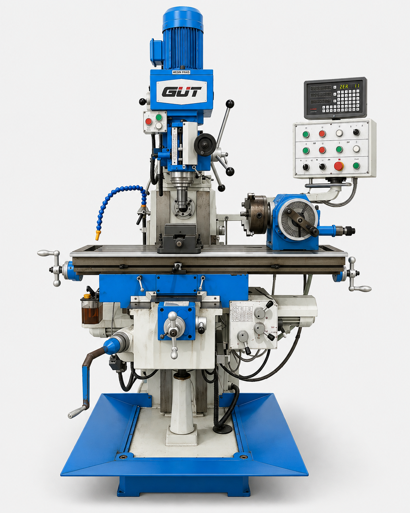
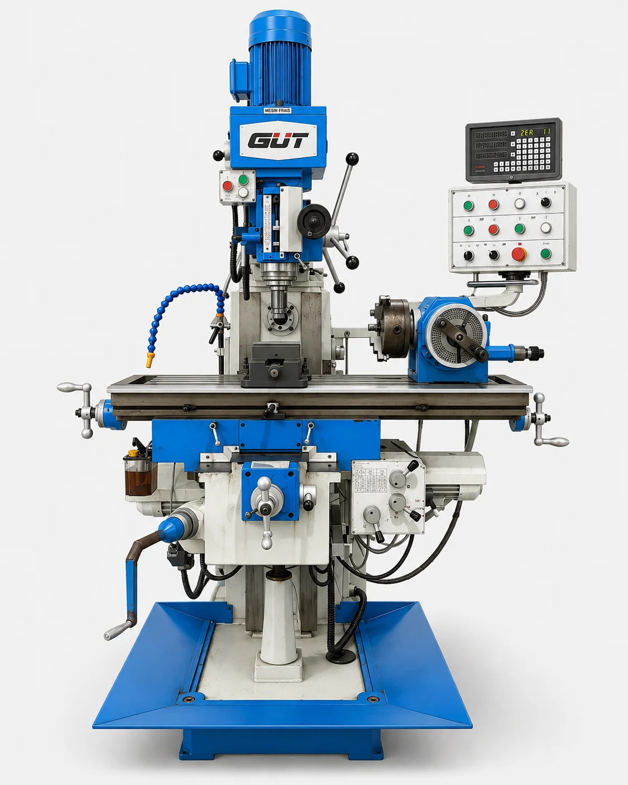

MEDIA PEMBELAJARAN INTERAKTIF
Diagnosis kerusakan mesin frais GUT melalui hotspot nyata
Pelajari komponen, analisis gejala, pilih tindakan pemeriksaan yang tepat, lalu uji pemahaman melalui evaluasi otomatis.

ALUR BELAJAR
Tiga modul utama
MODUL PEMBELAJARAN
Kenali sistem penting mesin frais GUT
Pilih topik untuk mempelajari fungsi, risiko, gejala gangguan, pemeriksaan awal, dan langkah pencegahan.
PBL SIMULATION
Diagnosis troubleshooting berbasis hotspot
Pilih kasus, baca gejala pada panel kiri, lalu putar tampilan mesin dengan drag kiri/kanan untuk mencari hotspot yang relevan.
Memuat tampilan 360°…

LATIHAN & EVALUASI
Uji pemahaman troubleshooting
Isi identitas, lalu kerjakan sepuluh soal pilihan ganda. Tidak diperlukan login.
Petunjuk
- Pilih satu jawaban A–D pada setiap soal.
- Soal mencakup spindle, gearbox, coolant, lubricator, meja, dan chatter.
- Nilai akhir tampil setelah semua soal selesai.
- Hasil dapat dicetak atau disimpan sebagai PDF.